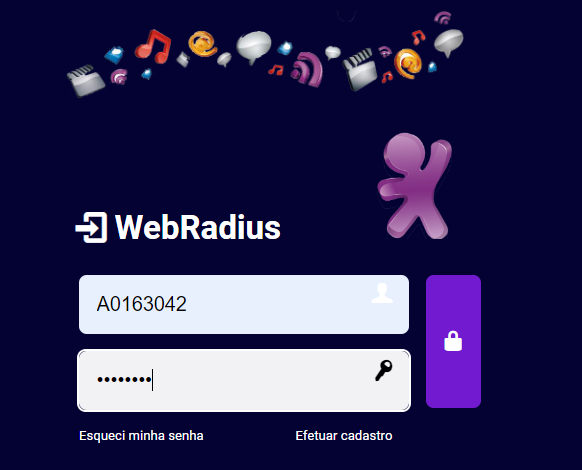

Como verificar alarme via Putty

Como converter Slot e Porta para Cabo e Primária via Sigres

Para acessar o CPQD é necessário três informações iniciais que conseguimos na
página inicial do zeus do nosso cliente. Por exemplo:
Escritório(ES): JB
AT: LV
CNL: 11000
Dentro do CPQD precisamos localizar o escritório do nosso cliente, com base nas informação que achamos no ZEUS EX: Escritório : JB
Dentro do escritório do cliente é necessário preencher os dados de localidade e site, conforme o CNL e a AT encontradas no ZEUS e clicar em seguida na lupa ao lado. E em seguida abrir o escritório.
O CPQD nos permite consultar em qual cabo e primária que o cliente está atualmente. Para cliente NEXT, consultar por designador de circuito usando o 069. E para clientes SIEBEL usando Ordem de Reserva(PON) ou Numero de serviço(ID Fibra Sem o CNL)
Ao pesquisar os dados da ordem do cliente, é aberto a aba em que
consta a posição atual do cliente.
No exemplo, cliente está no 05-F#73, cabo 5 primária 73
caso essa não seja a facilidade desejada, é necessário manobrar
Para realizarmos a manobra, é necessário primeiro encontrar uma fibra disponível para a manobrar. Na aba Consulta Recursos de Rede>Rede FTTx> Por Equip. Terminal, podemos realizar a consulta das fibras disponíveis.
No campo cabo, devemos preencher com o facilidade desejada, seguindo o
formato cabo-F#primária por exemplo: 05-F#73
Após preencher a faciliade, necessário clicar na lupinha ao lado
para encontrar a lista de caixas.
Ao aparecer a lista de caixa disponíveis, é necessário selecionar uma delas e clicar em Ok, para visualizar o intervalo de fibras da caixa após preencher
Após selecionar qual caixa/SS vamos pesquisar, devemos selecionar o tipo de equipamento terminal, ou seja, o tipo de caixa. Na maioria dos casos conseguimos achar como terminal de fibras as G0(caixas de rua) e Splittler as GP(caixas prediais).
Após identificarmos o tipo de caixa pelo zeus, ou por tentativa e erro, clicamos nas lupas que aparecem abaixo e em seguida, em “consultar”
Ao consultar, aparecerá todas as fibras da caixa. Como por exemplo, a SS7 que possui intervalo de 49 a 56. Ao aparecer o pop up, necessário localizar alguma fibra com “ESTADO” em VG, e em seguida identificar qual a numeração da fibra pelo campo “Unidade Lógica” e anotar para a manobra.
***Só é possível manobrar para o status de VG. Caso não aja nenhuma “vaga”, necessário voltar e verificar outra SS de mesmo cabo/primária***
Após localizar uma fibra vaga, deve-se seguir em Atualização de Recurso > Rede FTTX > Manobrar E então preencher com com o Identificador de Circuito(069), Ordem de Reserva/Recursos (PON) ou então, com o N° de Serviço (ID FIBRA - CNL)
Após isso, em filtrar para prosseguir com a manobra.
Após selecionar filtrar, aparecerá o cadastro do cliente na facilidade atual. Clicar em Manobrar para seguir para a nova facilidade Na próxima tela é necessário selecionar a aba “para” que será a futura posição.
Em seguida de selecionar a aba, Preencher A opção Cabo do Equip. com a facilidade desejada, ao clicar na lupa, aparecerá o pop up para selecionar as SS novamente, deve-se selecionar a que foi consultada anteriormente. Selecionar novamente o tipo de equip. terminal, EX: splitter. Em seguida nas opções ident. do equip. terminal e terminal Óptico, clicar na lupa que preencherá os campos automaticamente.
Após preencher todos os campos, igual o exemplo ao lado, identificar fibra/porta que foi encontrada com status de “VG”(vaga) anteriormente. Após preencher todos os campos e colocar a fibra desejada. Clicar no canto inferior da pagina “EXECUTAR” e aguardar alguns segundos para a conclusão da manobra.
Aguardar a mensagem de conclusão da manobra. Caso ocorra alguma falha, acionar o COACH.